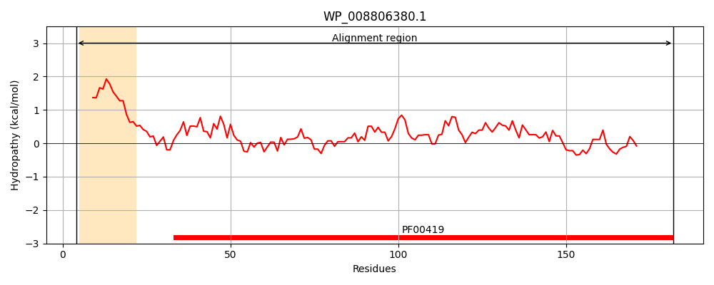
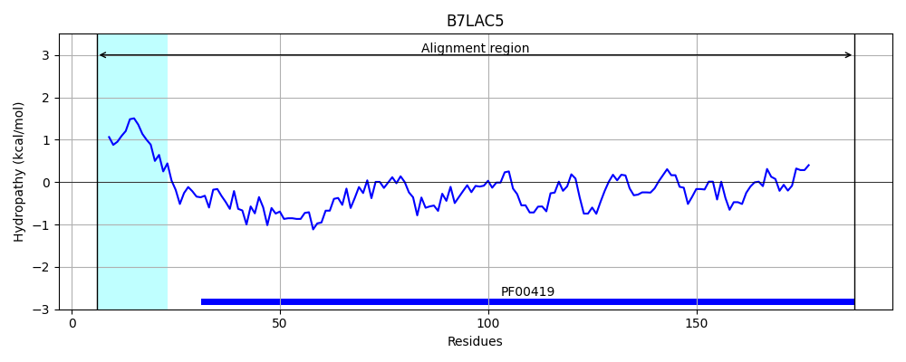
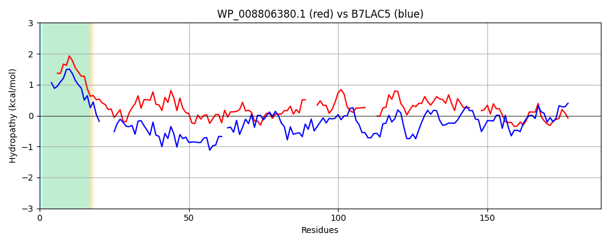

Hit Accession: B7LAC5
Hit TCID: 1.C.80.1.4
Hit Description: gnl|BL_ORD_ID|2029 gnl|TC-DB|B7LAC5|1.C.80.1.4 Putative fimbrial-like adhesin protein OS=Escherichia coli (strain 55989 / EAEC) GN=EC55989_0702 PE=4 SV=1
Mach Len: 188
e:0.000000
Query TMS Count : 1
Hit TMS Count: 1
TMS-Overlap Score: 0.850000
Predicted Substrates:CHEBI:24870;ion, CHEBI:25367;molecule
BLAST Alignment:
Score: 177 , Bit scores: 72 bits, E-value: 2.1e-16, Alignment length: 188, Percentage identity: 29
Query: 4 KTLAMVVVSALSLSSAAALADTTTVNGGTVHFKGEVVNAACAVDAGSIDQTVQLGQVRSAKLATAGSTSSSVGFNIQLDDCDTTVATKAS---VAFSGTAIDSSNTTVLA---LQNSAAGGATNVGVQILDSTGTPLALDGATFS---AATTLNDGTNIIPFQARYYATGAATAGTANADATFKVQYE 182
KTLA + VS L + A + G +HFKGEV+ A C + ID+ V+LGQV ++ + S +V +++L +CD ++ S ++ DSS T A L N++ G AT VGV++++ + + L AT A T+ N + + T G A+AT+ + Y+
Sbjct: 6 KTLAALAVSLLFTAPVYAADE----GSGEIHFKGEVIEAPCEIHQDDIDKEVELGQVTTSHI-NQSHHSDAVAVDLRLVNCDLENSSNGSGGKISKVAVTFDSSAKTTGADPILNNTSTGEATGVGVRLMNKDQSNIVLGTATPDIDLAPTSSEQTLNFFAWMEQIDQATPVTPGAVTANATYVLDYK 188 | Protein Hydropathy Plots: |
|---|
|  |  |
Pairwise Alignment-Hydropathy Plot:
|
|---|
|  |